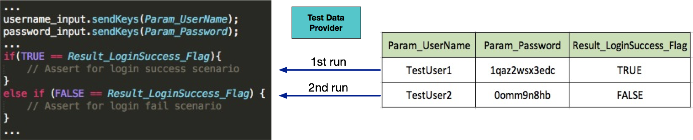
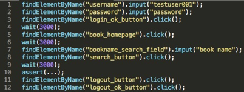
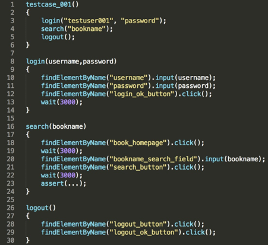
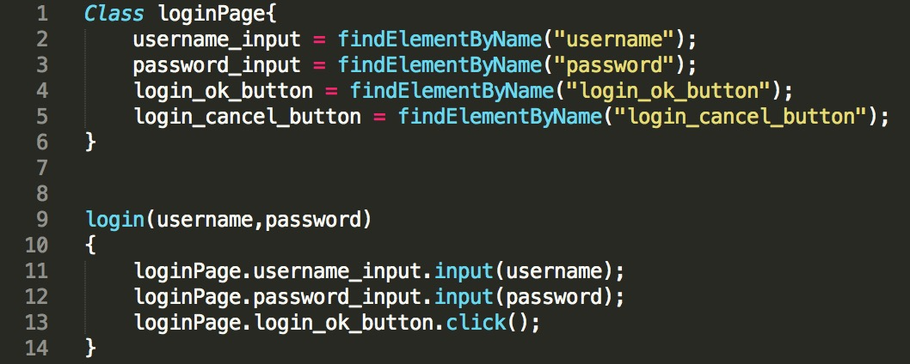

- 00 开篇词 从“小工”到“专家”，我的软件测试修炼之道.md.html
- 01 你真的懂测试吗？从“用户登录”测试谈起.md.html
- 02 如何设计一个“好的”测试用例？.md.html
- 03 什么是单元测试？如何做好单元测试？.md.html
- 04 为什么要做自动化测试？什么样的项目适合做自动化测试？.md.html
- 05 你知道软件开发各阶段都有哪些自动化测试技术吗？.md.html
- 06 你真的懂测试覆盖率吗？.md.html
- 07 如何高效填写软件缺陷报告？.md.html
- 08 以终为始，如何才能做好测试计划？.md.html
- 09 软件测试工程师的核心竞争力是什么？.md.html
- 10 软件测试工程师需要掌握的非测试知识有哪些？.md.html
- 11 互联网产品的测试策略应该如何设计？.md.html
- 12 从0到1：你的第一个GUI自动化测试.md.html
- 13 效率为王：脚本与数据的解耦 + Page Object模型.md.html
- 14 更接近业务的抽象：让自动化测试脚本更好地描述业务.md.html
- 15 过不了的坎：聊聊GUI自动化过程中的测试数据.md.html
- 16 脑洞大开：GUI测试还能这么玩（Page Code Gen + Data Gen + Headless）？.md.html
- 17 精益求精：聊聊提高GUI测试稳定性的关键技术.md.html
- 18 眼前一亮：带你玩转GUI自动化的测试报告.md.html
- 19 真实的战场：如何在大型项目中设计GUI自动化测试策略.md.html
- 20 与时俱进：浅谈移动应用测试方法与思路.md.html
- 21 移动测试神器：带你玩转Appium.md.html
- 22 从0到1：API测试怎么做？常用API测试工具简介.md.html
- 23 知其然知其所以然：聊聊API自动化测试框架的前世今生.md.html
- 24 紧跟时代步伐：微服务模式下API测试要怎么做？.md.html
- 25 不破不立：掌握代码级测试的基本理念与方法.md.html
- 26 深入浅出之静态测试方法.md.html
- 27 深入浅出之动态测试方法.md.html
- 28 带你一起解读不同视角的软件性能与性能指标.md.html
- 29 聊聊性能测试的基本方法与应用领域.md.html
- 30 工欲善其事必先利其器：后端性能测试工具原理与行业常用工具简介.md.html
- 31 工欲善其事必先利其器：前端性能测试工具原理与行业常用工具简介.md.html
- 32 无实例无真相：基于LoadRunner实现企业级服务器端性能测试的实践（上）.md.html
- 33 无实例无真相：基于LoadRunner实现企业级服务器端性能测试的实践（下）.md.html
- 34 站在巨人的肩膀：企业级实际性能测试案例与经验分享.md.html
- 35 如何准备测试数据？.md.html
- 36 浅谈测试数据的痛点.md.html
- 37 测试数据的“银弹”- 统一测试数据平台（上）.md.html
- 38 测试数据的“银弹”- 统一测试数据平台（下）.md.html
- 39 从小作坊到工厂：什么是Selenium Grid？如何搭建Selenium Grid？.md.html
- 40 从小工到专家：聊聊测试执行环境的架构设计（上）.md.html
- 41 从小工到专家：聊聊测试执行环境的架构设计（下）.md.html
- 42 实战：大型全球化电商的测试基础架构设计.md.html
- 43 发挥人的潜能：探索式测试.md.html
- 44 测试先行：测试驱动开发(TDD).md.html
- 45 打蛇打七寸：精准测试.md.html
- 46 安全第一：渗透测试.md.html
- 47 用机器设计测试用例：基于模型的测试.md.html
- 48 优秀的测试工程师为什么要懂大型网站的架构设计？.md.html
- 49 深入浅出网站高性能架构设计.md.html
- 50 深入浅出网站高可用架构设计.md.html
- 51 深入浅出网站伸缩性架构设计.md.html
- 52 深入浅出网站可扩展性架构设计.md.html
- 测试专栏特别放送 浅谈全链路压测.md.html
- 测试专栏特别放送 答疑解惑第一期.md.html
- 测试专栏特别放送 答疑解惑第七期.md.html
- 测试专栏特别放送 答疑解惑第三期.md.html
- 测试专栏特别放送 答疑解惑第二期.md.html
- 测试专栏特别放送 答疑解惑第五期.md.html
- 测试专栏特别放送 答疑解惑第六期.md.html
- 测试专栏特别放送 答疑解惑第四期.md.html
- 结束语 不是结束，而是开始.md.html
- 捐赠
13 效率为王：脚本与数据的解耦 + Page Object模型
在上一篇文章中，我用Selenium 2.0实现了我们的第一个GUI自动化测试用例，在你感觉神奇的同时，是否也隐隐感到一丝丝的担忧呢？比如，测试脚本中既有测试数据又有测试操作，所有操作都集中在一个脚本中等等。
那么，今天我就通过介绍GUI测试中两个非常重要的概念：测试脚本和数据的解耦，以及页面对象（Page Object）模型，带你看看如何优化这个测试用例。
测试脚本和数据的解耦
我在前面的文章中，和你分享过GUI自动化测试适用的场景，它尤其适用于需要回归测试页面功能的场景。那么，你现在已经掌握了一些基本的GUI自动化测试用例的实现方法，是不是正摩拳擦掌准备批量开发GUI自动化脚本，把自己从简单、重复的GUI界面操作中解放出来呢？
但是，你很快就会发现，如果在测试脚本中硬编码（hardcode）测试数据的话，测试脚本灵活性会非常低。而且，对于那些具有相同页面操作，而只是测试输入数据不同的用例来说，就会存在大量重复的代码。
举个最简单的例子，上一篇文章中实现的百度搜索的测试用例，当时用例中搜索的关键词是“极客时间”，假设我们还需要测试搜索关键词是“极客邦”和“InfoQ”的场景，如果不做任何处理，那我们就可能需要将之前的代码复制3份，每份代码的主体完全一致，只是其中的搜索关键词和断言（Assert）的预期结果不同。
显然，这样的做法是低效的。
更糟糕的是，界面有任何的变更需要修改自动化脚本时，你之前复制出来的三个脚本都需要做相应的修改。比如，搜索输入框的名字发生了变化，你就需要修改所有脚本中findElement方法的by.name属性。
而这里只有三个脚本还好，如果有30个或者更多的脚本呢，你会发现脚本的维护成本实在是太高了。那么，这种情况应该怎么处理呢？
相信你现在已经想到了，把测试数据和测试脚本分离。也就是说测试脚本只有一份，其中需要输入数据的地方会用变量来代替，然后把测试输入数据单独放在一个文件中。这个存放测试输入数据的文件，通常是表格的形式，也就是最常见的CSV文件。
然后，在测试脚本中通过data provider去CSV文件中读取一行数据，赋值给相应的变量，执行测试用例。接着再去CSV文件中读取下一行数据，读取完所有的数据后，测试结束。CSV文件中有几行数据，测试用例就会被执行几次。具体流程如图1所示。

图1 数据驱动测试的基本概念
这也就是典型的数据驱动（Data-driven）测试了。
数据驱动很好地解决了大量重复脚本的问题，实现了“测试脚本和数据的解耦”。 目前几乎所有成熟的自动化测试工具和框架，都支持数据驱动的测试，而且除了支持CSV这种最常见的数据源外，还支持xls文件、JSON文件，YAML文件，甚至还有直接以数据库中的表作为数据源的，比如QTP就支持以数据库中的表作为数据驱动的数据源。
数据驱动测试的数据文件中不仅可以包含测试输入数据，还可以包含测试验证结果数据，甚至可以包含测试逻辑分支的控制变量。 图1中的“Result_LoginSuccess_Flag”变量其实就是用户分支控制变量。
数据驱动测试的思想不仅适用于GUI测试，还可以用于API测试、接口测试、单元测试等。 所以，很多API测试工具（比如SoapUI），以及单元测试框架都支持数据驱动测试，它们往往都是通过Test Data Provider模块将外部测试数据源逐条“喂”给测试脚本。
页面对象（Page Object）模型
为了让你了解“页面对象（Page Object）模型”这个概念的来龙去脉，并能够深入理解这个概念的核心思想，我会先从早期的GUI自动化测试开始讲起。
早期的GUI自动化测试脚本，无论是用开源的Selenium开发，还是用商用的QTP（Quick Test Professional，现在已经改名为Unified Functional Testing）开发，脚本通常是由一系列的页面控件的顺序操作组成的，如图2所示的伪代码展示了一个典型的早期GUI测试脚本的结构。

图2 早期的GUI测试脚本伪代码示例
我先来简单介绍一下这个脚本实现的功能。
- 第1-4行，输入用户名和密码并点击“登录”按钮，登录完成后页面将跳转至新页面；
- 第5行，在新页面找到“图书”链接，然后点击链接跳转至图书的页面；
- 第7-10行，在图书搜索框输入需要查找的书名，点击“搜索”按钮，然后通过assert验证搜索结果；
- 第11-12行，用户登出。
看完这段伪代码，你是不是觉得脚本有点像操作级别的“流水账”，而且可读性也比较差，这主要体现在以下几个方面：
- 脚本逻辑层次不够清晰，属于All-in-one的风格，既有页面元素的定位查找，又有对元素的操作。
- 脚本的可读性差。 为了方便你理解，示例中的代码用了比较直观的findElementByName，你可以很方便地从name的取值，比如“username”和“password”，猜出脚本所执行的操作。- 但在实际代码中，很多元素的定位都会采用Xpath、ID等方法，此时你就很难从代码中直观看出到底脚本在操作哪个控件了。也就是说代码的可读性会更差，带来的直接后果就是后期脚本的维护难度增大。- 有些公司自动化测试脚本的开发和维护是两拨人，脚本开发并调试完以后，开发人员就会把脚本移交给自动化测试执行团队使用并维护，这种情况下脚本的可读性就至关重要了。但即使是同一拨人维护，一段时间后，当时的开发人员也会遗忘某些甚至是大部分的开发步骤。
- 由于脚本的每一行都直接描述各个页面上的元素操作，你很难一眼看出脚本更高层的业务测试流程。 比如图2的业务测试流程其实就三大步：用户登录、搜索书籍和用户登出，但是通过阅读代码很难一下看出来。
- 通用步骤会在大量测试脚本中重复出现。 脚本中的某些操作集合在业务上是属于通用步骤，比如上面伪代码的第1-4行完成的是用户登录操作，第11-12行完成的是用户的登出操作。
这些通用的操作，会在其他测试用例的脚本中被多次重复。无论操作发生变动，还是页面控件的定位发生变化时，都需要同时修改大量的脚本。
其实，我上面说到的这四点正是早期GUI自动化测试的主要问题，这也是我一直说“开发几个GUI自动化测试玩玩会觉得很高效，但是当你开发成百上千个GUI自动化测试的时候，你会很痛苦”的本质含义。
那怎么解决这个问题呢？你可能已经想到了软件设计中模块化设计的思想。
没错，就是利用模块化思想，把一些通用的操作集合打包成一个个名字有意义的函数，然后GUI自动化脚本直接去调用这些操作函数来构成整个测试用例，这样GUI自动化测试脚本就从原本的“流水账”过渡到了“可重用脚本片段”。
如图3所示，就是利用了模块化思想的伪代码。

图3 基于模块化的GUI测试用例伪代码示例
第1-6行就是测试用例，非常简单直接，一眼就可以看出测试用例具体在执行什么操作，而各个操作函数的具体内部实现还是之前那些“流水账”。当然这里对于测试输入数据完全可以采用测试驱动方法，这里为了直观我就直接硬编码了测试示例数据。
实际工程应用中，第1-6行的测试用例和第8-30行的操作函数通常不会放在一个文件中，因为操作函数往往会被很多测试用例共享。这种模块化的设计思想，带来的好处包括：
解决了脚本可读性差的问题，脚本的逻辑层次也更清晰了；
解决了通用步骤会在大量测试脚本中重复出现的问题， 现在操作函数可以被多个测试用例共享，当某个步骤的操作或者界面控件发生变化时，只要一次性修改相关的操作函数就可以了，而不需要去每个测试用例中逐个修改。
但是，这样的设计并没有完全解决早期GUI自动化测试的主要问题，比如每个操作函数内部的脚本可读性问题依然存在，而且还引入了新的问题，即如何把控操作函数的粒度，以及如何衔接两个操作函数之间的页面。
关于这两个新引入的问题，我会在后面的文章中为你详细阐述。我先来跟你聊聊，怎么解决早期GUI自动化测试的“可读性差、难以维护”问题。
现在，操作函数的内部实现还只是停留在“既有页面元素的定位查找，又有对元素的操作”的阶段，当业务操作本身比较复杂或者需要跨多个页面时，“可读性差、难以维护”的问题就会暴露得更加明显了。
那么，有什么更好的办法来解决这个问题吗？答案就是，我要分享的GUI自动化测试的第二个概念：页面对象（Page Object）模型。
页面对象模型的核心理念是，以页面（Web Page 或者Native App Page）为单位来封装页面上的控件以及控件的部分操作。而测试用例，更确切地说是操作函数，基于页面封装对象来完成具体的界面操作，最典型的模式是“XXXPage.YYYComponent.ZZZOperation”。
基于这个思想，上述用例的伪代码可以进化成如图4所示的结构。这里，我只给出了login函数的伪代码，建议你按照这种思路，自己去实现一下search和logout的代码，这样可以帮你更好的体会页面对象模型带来的变化。

图4 基于页面对象模型的伪代码示例
通过这样的代码结构，你可以清楚地看到是在什么页面执行什么操作，代码的可读性以及可维护性大幅度提高，也可以更容易地将具体的测试步骤转换成测试脚本。
总结
今天我给你讲了什么是数据驱动的测试，让你明白了“测试脚本和数据解耦”的实现方式以及应用场景。接着从GUI自动化测试历史发展演变的角度引出了GUI测试中的“页面对象模型”的概念。
“测试脚本和数据解耦”的本质是实现了数据驱动的测试，让操作相同但是数据不同的测试可以通过同一套自动化测试脚本来实现，只是在每次测试执行时提供不同的测试输入数据。
“页面对象模型”的核心理念是，以页面为单位来封装页面上的控件以及控件的部分操作。而测试用例使用页面对象来完成具体的界面操作。
希望这篇文章，可以让你更清楚地认识GUI自动化测试用例的逻辑以及结构。同时，你可能已经发现，这篇文章的内容并不是局限在某个GUI自动化测试框架上，你可以把这些设计思想灵活地运用其他GUI自动化测试项目中，这也是我希望达到的“授人以鱼，不如授人以渔”。
思考题
我在文中有这样一段描述：页面对象模型的核心理念是，以页面为单位来封装页面上的控件以及控件的部分操作。但是，现在业界对“是否应该在页面对象模型中封装控件的操作”一直有不同的看法。
有些观点认为，可以在页面对象模型中封装页面控件的操作；而有些观点则认为，页面对象模型只封装控件，而操作应该再做一层额外的封装。
你更认同哪种观点呢，说说你的理由吧。
欢迎你给我留言。
© 2019 - 2023 Liangliang Lee. Powered by gin and hexo-theme-book.